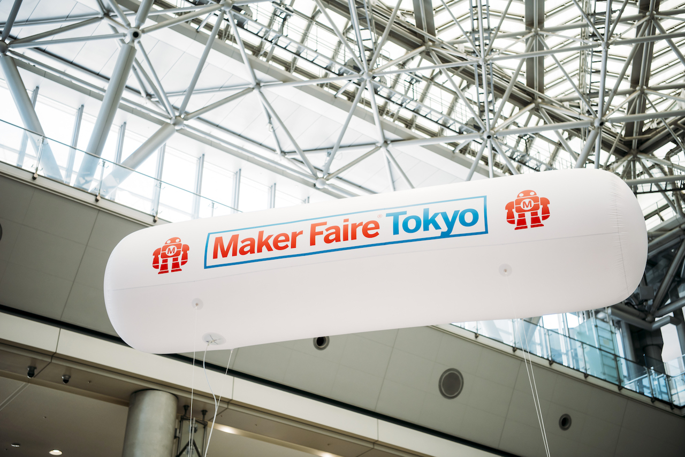
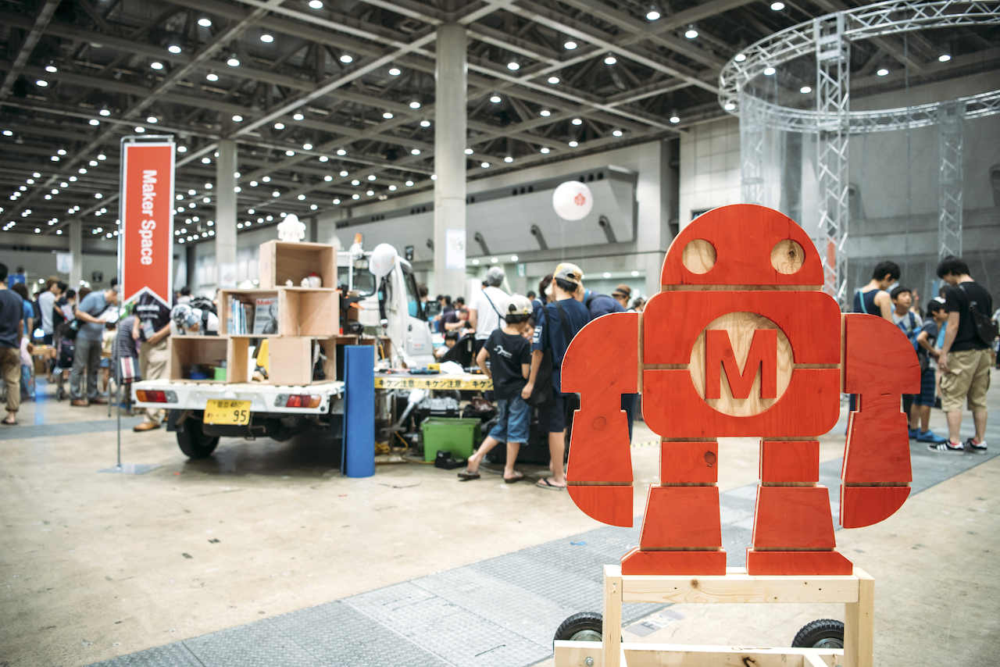

{% if ref == "registration" %}
 {% else %}
 {% endif %}
Thank You!
確認メールが自動送信されますのでご確認ください。
確認メールが届かない場合は、
Maker Faire Tokyo出展者担当（makers@makejapan.org）までお問い合わせください。
（スパムメールに分類されていることもございますので、お問い合わせ前にご確認をお願いいたします。)
Maker Toolkit（出展者向け情報ページ）では、出展告知に使用いただけるロゴ素材もご用意しています。ぜひ、ご利用ください。
イベントに関する情報は、TwitterやFacebook、Instagramでも発信しています。ぜひ、フォローしてください。